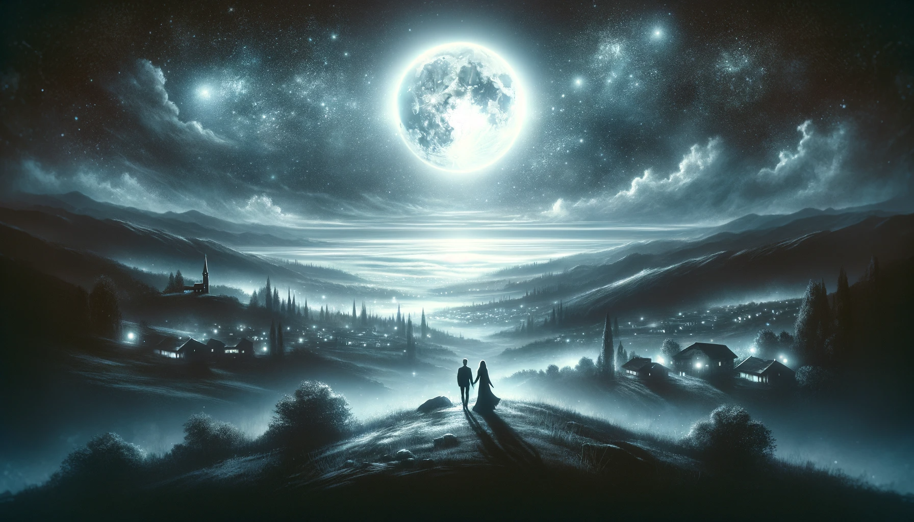

開発成果物リンク集

月明かりの約束
かつて、月が地上のすべてを見守る世界がありました。人々は月の光を信じ、夜になると月明かりの下でお互いの安全と幸福を祈りました。ある晩、青年と少女は月の下で出会い、互いの夢を語り合いました。彼らは月が最も明るく輝く夜に再び会うことを約束し、その約束は永遠の愛と友情の象徴となったのです。
遺された都市
大災害後の荒廃した地球。人々は地下に逃れ、地上には廃墟と化した都市が残されました。しかし、ある勇敢な少女が地上を探索する決意をしました。彼女は古いロボットを修理し、共に廃墟の中から希望の光を見つけ出す旅に出る。彼女たちは人類の新しい始まりを告げる発見をするのでした。
星々の囁き
宇宙の果てにある惑星連合で、星々は人々の運命を決めると信じられていました。
一人の占星術師が、星の配置から大きな変革の時が近いことを読み取ります。彼は各惑星の代表者たちを集め、推測される未来を共有しました。この知らせを受けて、連合は未知の可能性に向けて動き出したのです。革新的な技術を持つ惑星、神秘的な力を操る惑星、古代からの智慧を守る惑星。それぞれが持つ能力を結集し、未来に立ち向かう計画を立てます。占星術師の警告により、かつて競合していた惑星間の壁が低くなり、新たな同盟が芽生え始めました。